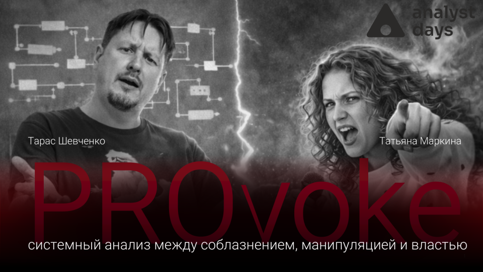
PROvoke
Системный анализ между соблазнением, манипуляцией и властью
Более 10 лет в системном анализе, продуктовой разработке и трансформации инженерных команд в эпоху AI.

Системный анализ между соблазнением, манипуляцией и властью
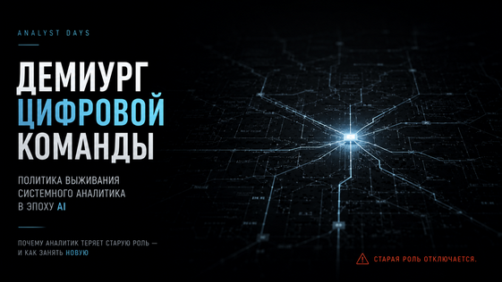
Политика выживания системного аналитика в эпоху AI
Как меняется команда, когда AI становится участником разработки
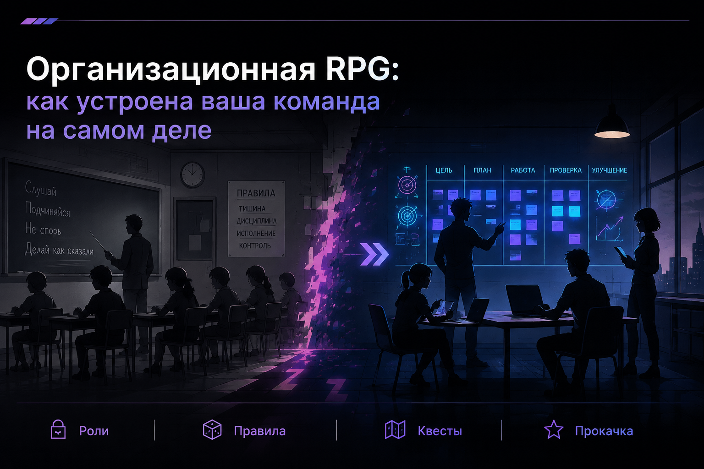
Как устроена ваша команда на самом деле
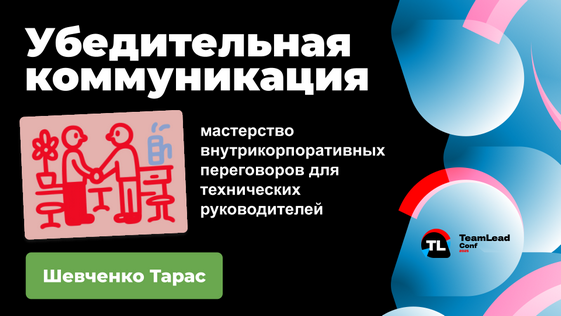
Мастерство внутрикорпоративных переговоров для технических руководителей
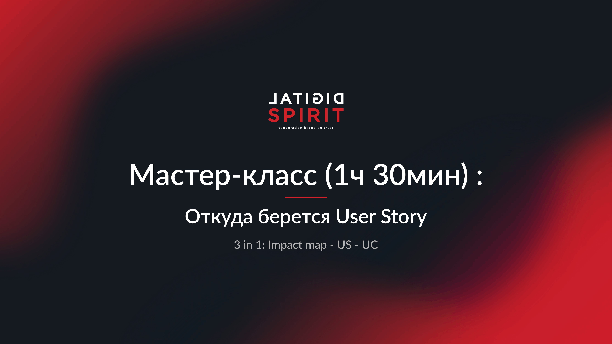
Практический мастер-класс о происхождении требований, потребностях пользователей и превращении идей в истории.
▶ Смотреть записьБолее 10 лет в IT. Системный аналитик, продуктовый практик, ментор и спикер.
Исследую влияние AI на инженерные команды, помогаю компаниям выстраивать процессы и развивать экспертизу.
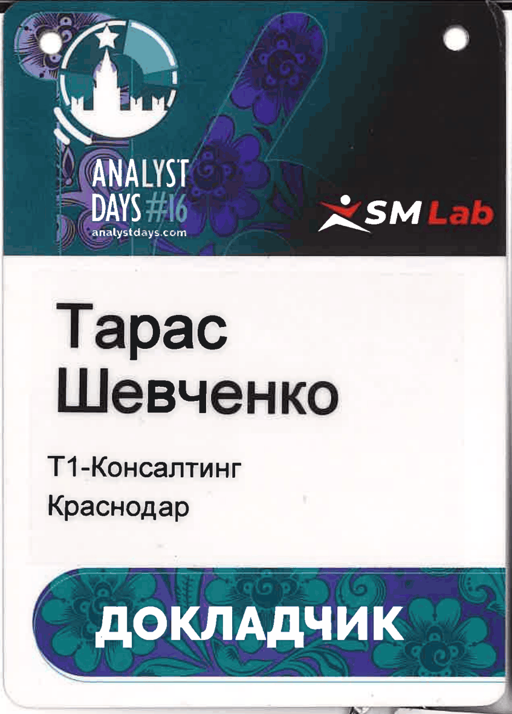
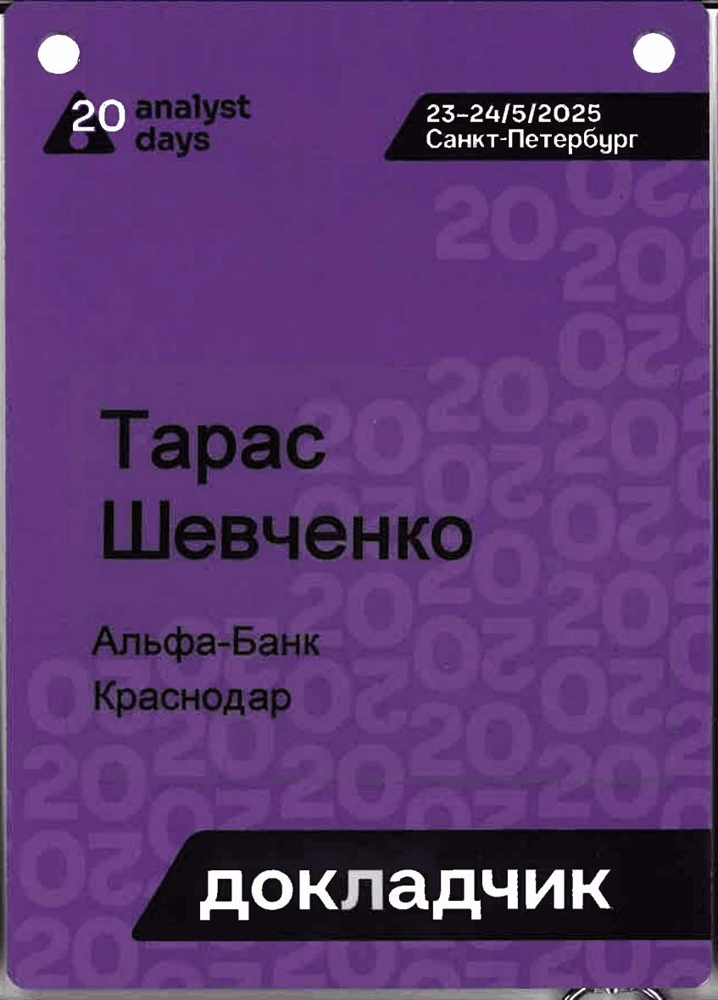
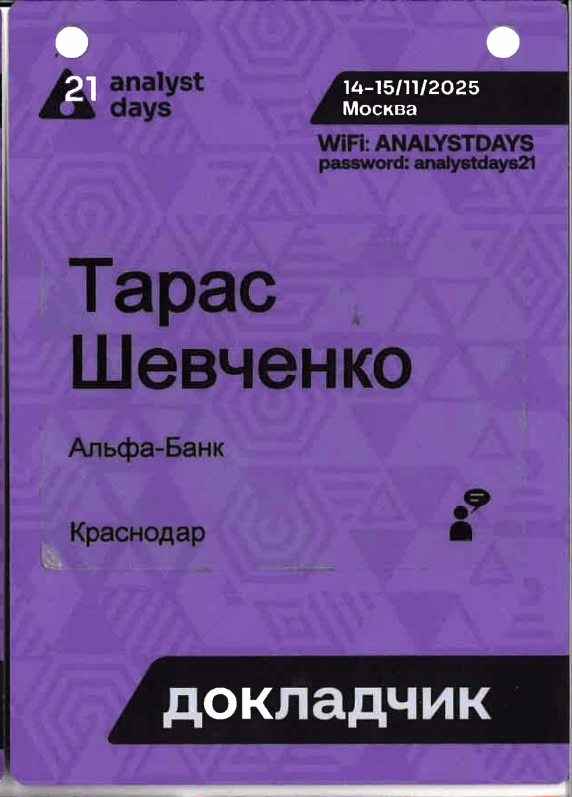
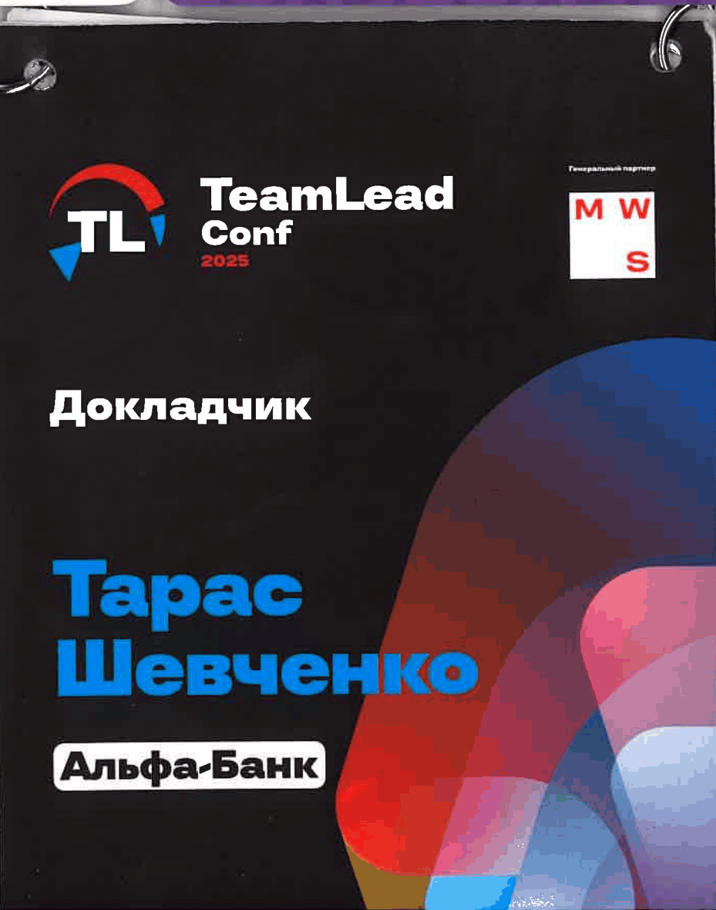
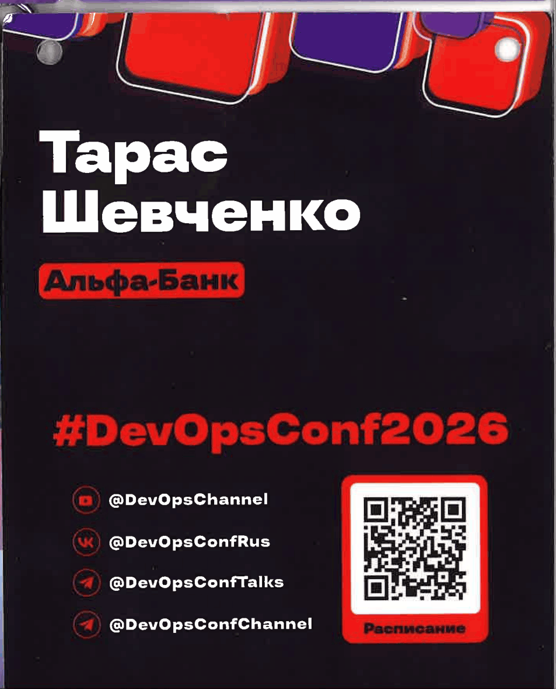
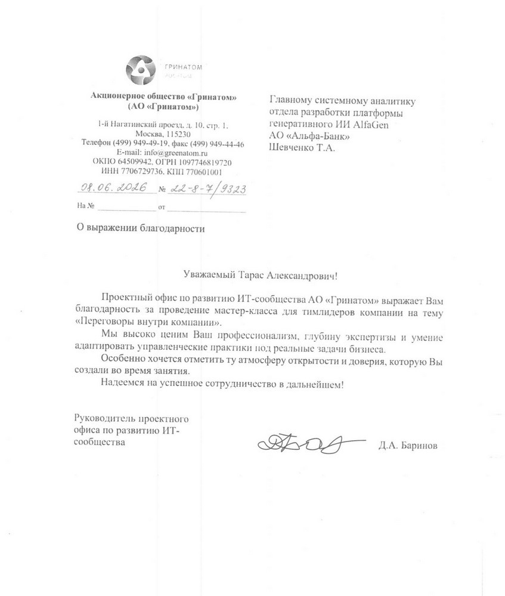